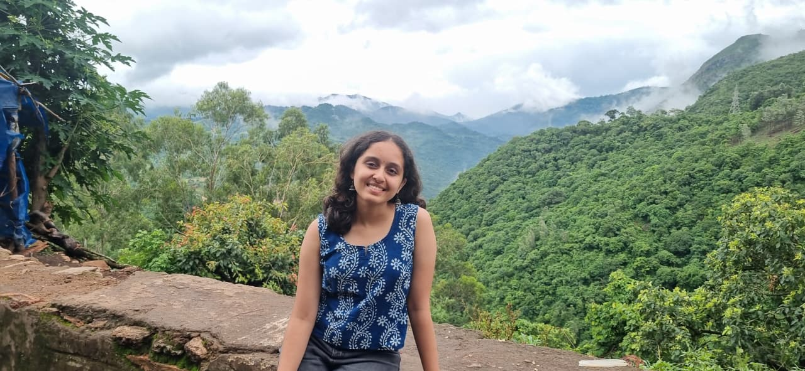

Computer Science · Bengaluru
Hi, I’m Ankita.
I’m pursuing a Bachelor of Technology in Computer Science and Engineering at PES University, Bengaluru. I’m interested in machine learning, computer vision, and building systems that sit between research and practical applications.
Outside tech, I’ve been learning Carnatic music for more than a decade. It has taught me to appreciate the balance between structure and interpretation, and the patience that comes with practising something over a long period of time. Those are qualities I find myself bringing into my technical work as well.

Education
PES University | Bengaluru, India
Bachelor of Technology in Computer Science and Engineering
2023–2027 · 9.75 / 10 CGPA · Prof. MRD Scholarship (Top 5%)